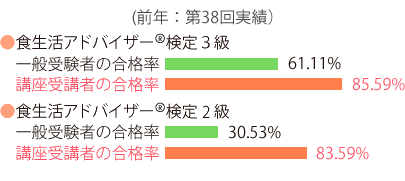

「合格講座」とは、その回ごとに作成された「模擬問題集」を活用しながら、食生活アドバイザー®検定試験の合格を目指し、1日間で集中的に学習する対策講座です。出題傾向を把握し、わかりやすい解説で理解を深めることができ、合格率も上がります。

【2019年 第41回】
| 東京 | ①6月22日(土) ②6月23日(日) ③6月29日(土) ④6月30日(日) ⑤7月6日(土) ⑥7月7日(日) |
AP西新宿 |
|---|---|---|
| 名古屋 | ①6月22日(土) ②6月23日(日) ③6月29日(土) ④6月30日(日) |
AP名古屋.名駅 |
| 福岡 | ①6月22日(土) ②6月23日(日) |
博多バスターミナル |
| 仙台 | ①6月22日(土) ②6月23日(日) |
仙台青葉カルチャーセンター |
| 大阪 | ①6月29日(土) ②6月30日(日) ③7月6日(土) ④7月7日(日) |
AP大阪梅田東 日本生命ビル |
※ いずれも1日で完結します。
※ 同じ日に2級・3級を同時に受講することはできません。
-
（全会場・全日程共通予定）
午前 10時20分～12時50分 お昼休み 12時50分～13時40分 午後 13時40分～16時10分 ※ 午前、午後それぞれ3科目ずつ授業を進めます。
-
（事前に書店にてお買い求めください）
- 食生活アドバイザー® 3級
公式テキスト＆問題集
（ 日本能率協会マネジメントセンター） - 食生活アドバイザー® 2級
公式テキスト＆問題集
（ 日本能率協会マネジメントセンター）
※ 必ず事前に書店にてお買い求めいただき、
ご持参ください。
講座当日の販売はいたしません。 - 食生活アドバイザー® 3級
-
（講座当日配布します）
- 第41回検定受験用模擬問題集
-
- 3級：12,000円（税込み）
- 2級：18,000円（税込み）
合格講座のお申込みは、検定事務局から送られてくる受験案内に同封の専用振込用紙（払込取扱票）に必要事項を記入し、ゆうちょ銀行または郵便局にて受講料をお振込ください。
（第41回実施分）
2019年4月1日（月）～5月31日（金）